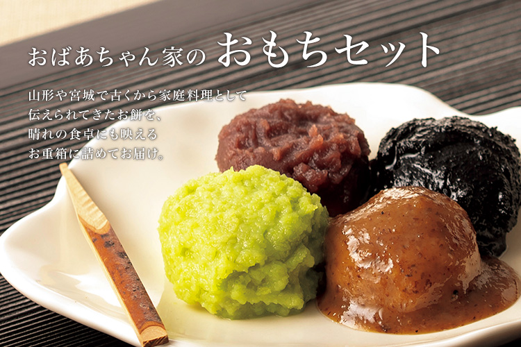
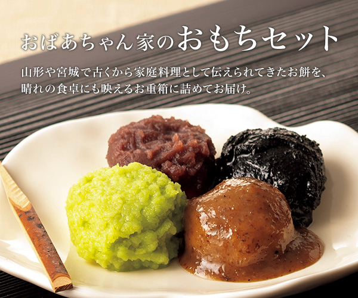
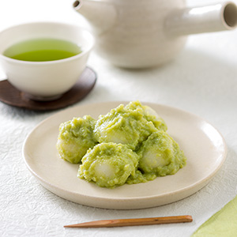
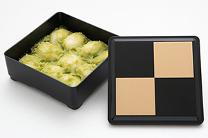
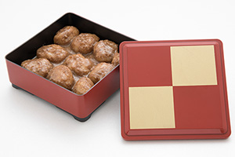

リンベルが日本一と認めた「極みの味」
山形が生んだ極上の和スウィーツ


ここが「極み」
- 【じんだん餅】旬の尾花沢産「天平秘伝豆」をふんだんに使用した、濃厚な味わい。
- 【くるみ餅】くるみ独特の香りで、貴重な山形県産の風味豊かな鬼ぐるみのみを使用した餡を使用。
商品のこだわりポイント
山形県尾花沢産「天平秘伝豆」で作る、色鮮やかで素朴な味わいの「じんだん餅」


「じんだん」とは、茹でた枝豆をすりつぶし、砂糖と塩を加えて餡にしたものです。山形県や宮城県などの南東北一帯や北関東の一部地域に伝わる郷土料理で、地域によっては「ずんだ」や「ずんだん」「じんだ」「ぬた」などとも呼ばれています。そして、この「じんだん」を餅にからめたものが「じんだん餅」です。
『おばあちゃん家のじんだん餅」』は、山形県尾花沢産の「天平秘伝豆」と、山形県産のもち米「ひめのもち」を使う、素朴な味わいの「じんだん餅」です。
厳選した枝豆ともち米、砂糖と塩だけを使い、山形のおばあちゃんのように作ることで、素朴な味わいに仕上げています。砂糖を控え目にし、枝豆を荒びきにして粒々感を残した、風味豊かな味わいです。
「秘伝豆」は山形県の青大豆を代表する存在で、尾花沢で受け継がれている「秘伝豆」から土地相性のよいものだけを選抜し、栽培しているのが「天平秘伝豆」です。
香りがよく、青々とした色が美しい、甘みのある枝豆です。この「じんだん餅」に使われている「天平秘伝豆」は、収穫期間中もっとも良い４～５日間の収穫分から、さらに良いものを選別して使っています。
山形県産もち米「ひめのもち」はコシがあり、あっさりした味わいと、滑らかな食感が特徴です。米の色が白く、杵で搗いて餅にすると一層白さが引き立ちます。餅は堅くならないよう、独自の工夫を加えています。
枝豆は「畑の肉」と呼ばれる大豆と同じ良質のたんぱく質と、緑黄色野菜の栄養成分であるビタミン類を豊富に含む健康野菜。「じんだん餅」は風味や色合いが楽しめる、栄養に富んだ健康的なスウィーツです。
厳選枝豆で作る「じんだん餅」と香り良く濃厚な味の「くるみ餅」

山形県産の鬼ぐるみだけをすりつぶし、砂糖と塩を加えて餡にし、杵で搗いた餅にからめました。
鬼ぐるみは、主に山間の川沿いなどに自生しているくるみで、“殻つきくるみ”として一般に市販されているくるみ（ペルシャぐるみ、テウチぐるみ、信濃ぐるみ）と比べると、殻が厚めで非常に堅く、種子を取り出すのが容易ではありません。その分、味が濃厚で、くるみ独特の香りが楽しめます。そこで、堅い殻をひとつひとつ金槌で叩いて割り、少ない実を手で取り出して使っています。風味豊かな鬼ぐるみの餡は、滑らかな食感で、あっさりした味わいの「ひめのもち」の餅とよく合います。
料理研究家やグルメライターも絶賛！
「美食のスペシャリスト」の方々からも
お褒めの言葉をいただいています！


しみじみとしてしまうおいしさ
料理家 ちょりママさん
詳しくはこちら